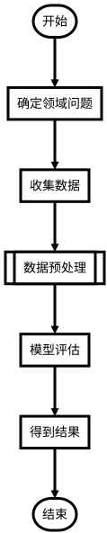
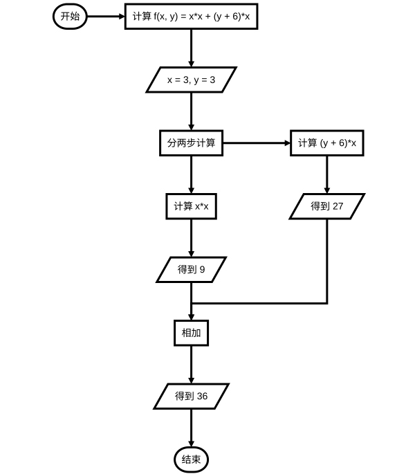

流程图是一种可用于表示工作流操作、算法步骤和程序控制等的图形化展示，常常被运用于软件开发过程中，也是开发者之间交流的一种媒介。流程图的使用场景很多，其作用也不言而喻。比如在Data Mining Process[1] 一文中，作者使用流程图来阐释数据挖掘工作的一般过程，简单易懂。绘制流程图的工具有很多，如 ProcessOn、亿图展示、Dia、Processist 和 Draw.io 等[2]。
flowchart.js 简介
flowchart.js 是一种可以运行在终端和浏览器的流程图领域特定语言，专门用于绘制流程图且可输出 SVG 图片[3]。flowchart.js 的节点和连接信息可以分开定义，这样即保证了节点的可复用性，也提高了连接信息修改的效率。flowchart.js 基于文本绘制流程图，但相对其它流程图工具来说，功能较少，所以只能绘制简单的流程图，正如其官网[4]所介绍的那样：Draw simple SVG flow chart diagrams from textual representation of the diagram。
节点与连接
节点与连接是流程图中最重要的两种元素，本节分别对这两种元素进行说明。
节点
流程图是由多个节点相互连接的图像，flowchart.js 定义了多种节点类型，如下表：
| 节点名称 | 关键字 | 形状 | 说明 |
|---|---|---|---|
| 开始 | start | 圆角矩形 | 定义流程图的开始 |
| 处理操作 | operation | 矩形 | 流程图中某一操作或步骤 |
| 条件判断 | condition | 菱形 | 根据判断结果有条件执行下一步操作 |
| 输入/输出 | inputoutput | 平行四边形 | 可作为操作的输入或输出 |
| 子流程 | subroutine | 上下边重合的嵌套矩形 | 表示流程中内部流程，防止流程图内容过多 |
| 并行操作 | parallel | 矩形 | 后续操作可并行 |
| 结束 | end | 圆角矩形 | 定义流程图的开始 |
在 flowchart.js 中，声明一个节点的格式如下：
节点名称=>关键字: 显示文本[:>链接]
:>链接为可选内容，用于表示节点点击后要跳转的链接。
连接
节点与节点之间需要通过连接符进行连接，用于表示数据流或工作流的方向，使用 -> 表示。节点的连接信息不需要在一行中定义，即下方两种连接信息是等价的：
# 定义 1
node1->node2->node3
# 定义 2
node1->node2
node2->node3
节点与节点连接时，可以约束前置节点的行为，比如方向，格式如下：
node1(spec1, spec2)->node2
方向的定义包括 left、rigght、top 和 bottom。同时，不同类型的节点可约束的行为不尽相同，比如除 end 类型的节点，其余节点都可以约束方向。
示例
上文中有提到，flowchart.js 支持在终端和浏览器中成像，分别对应着两种不同的使用方法：
- 终端：diagrams 命令行工具输出 SVG 图像；
- 浏览器：引用 flowchart.js 文件，通过 JS 脚本生成并显示流程图；
diagrams
diagrams 是用于生成多种类型图像的命令工具，可生成的图像包括：流程图、时序图等[5]。diagrams 安装命令及生成 flowchart.js 流程图如下：
npm install -g diagrams
diagrams flowchart xxx.flowchart xxx.svg
其中，xxx.flowchart 为语法定义文件，xxx.svg 为输出的 SVG 文件。
浏览器
flowchart.js 依赖于 Raphaël[6]，在 HTML 中需要引入两个 JS 文件：
<script src="raphael-min.js"><
<script src="flowchart-latest.js"></script>
HTML 代码大致如下：
<div id="diagram"></div>
<script>
let diagram = flowchart.parse(`flowchart 流程图文本信息`)
diagram.drawSVG('diagram')
</script>
流程图示例
数据挖掘流程图
st=>start: 开始
state_the_problem=>operation: 确定领域问题
collect_the_data=>operation: 收集数据
data_preprocessing=>subroutine: 数据预处理
estimate_model=>operation: 模型评估
draw_conclusion=>operation: 得到结果
e=>end: 结束
st->state_the_problem->collect_the_data->data_preprocessing->estimate_model->draw_conclusion->e

计算方程式
st=>start: 开始
op_problem=>operation: 计算 f(x, y) = x*x + (y + 6)*x
x_y_input=>inputoutput: x = 3, y = 3
two_parts_compute=>parallel: 分两步计算
left_part=>operation: 计算 x*x
left_result=>inputoutput: 得到 9
right_part=>operation: 计算 (y + 6)*x
right_result=>inputoutput: 得到 27
op_add=>operation: 相加
add_result=>inputoutput: 得到 36
end=>end: 结束
st(right)->op_problem->x_y_input
x_y_input->two_parts_compute
two_parts_compute(path1, right)->right_part
two_parts_compute(path2, bottom)->left_part
right_part->right_result->op_add
left_part->left_result->op_add
op_add->add_result->end

参考
- Data Mining Process https://www.geeksforgeeks.org/data-mining-process/
- 评测了10款画流程图软件，这4款最好用！（完全免费） https://zhuanlan.zhihu.com/p/91344875
- adrai/flowchart.js https://github.com/adrai/flowchart.js
- flowchart.js https://flowchart.js.org/
- selfless/diagrams https://github.com/seflless/diagrams
- Raphaël http://www.raphaeljs.com/
评论